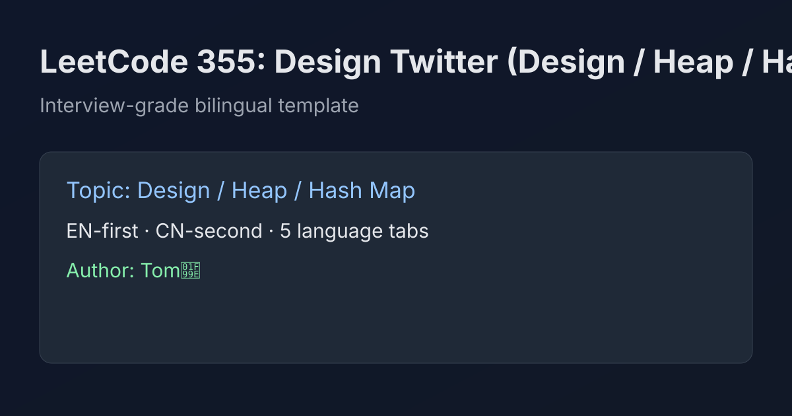

LeetCode 355: Design Twitter (Design / Heap / Hash Map)
LeetCode 355DesignHeapSource: https://leetcode.com/problems/design-twitter/

English
Idea
Store follow relation in Map<user, Set<followee>>. Store each user tweets as append-only list [time, tweetId]. For feed, collect each followed user latest tweet into a max-heap by time, pop top 10 and push previous tweet from same user list.
Complexity
postTweet, follow, unfollow: amortized O(1). getNewsFeed: O((F + 10) log F), where F is followed users count (including self).
Reference Implementations (Java / Go / C++ / Python / JavaScript)
class Twitter {
private static class Tw { int id, t; Tw(int id, int t){this.id=id;this.t=t;} }
private static class Node { int uid, idx, id, t; Node(int u,int i,int id,int t){uid=u;idx=i;this.id=id;this.t=t;} }
private final java.util.Map<Integer, java.util.Set<Integer>> follow = new java.util.HashMap<>();
private final java.util.Map<Integer, java.util.List<Tw>> tweets = new java.util.HashMap<>();
private int time = 0;
public void postTweet(int userId, int tweetId) { tweets.computeIfAbsent(userId,k->new java.util.ArrayList<>()).add(new Tw(tweetId, ++time)); }
public java.util.List<Integer> getNewsFeed(int userId) {
java.util.Set<Integer> fs = follow.computeIfAbsent(userId,k->new java.util.HashSet<>()); fs.add(userId);
java.util.PriorityQueue<Node> pq = new java.util.PriorityQueue<>((a,b)->b.t-a.t);
for (int u: fs){ var l=tweets.get(u); if(l!=null&&!l.isEmpty()){ int i=l.size()-1; var tw=l.get(i); pq.add(new Node(u,i,tw.id,tw.t)); } }
java.util.List<Integer> ans = new java.util.ArrayList<>();
while(!pq.isEmpty() && ans.size()<10){ var n=pq.poll(); ans.add(n.id); if(n.idx>0){ var tw=tweets.get(n.uid).get(n.idx-1); pq.add(new Node(n.uid,n.idx-1,tw.id,tw.t)); } }
return ans;
}
public void follow(int followerId, int followeeId) { follow.computeIfAbsent(followerId,k->new java.util.HashSet<>()).add(followeeId); }
public void unfollow(int followerId, int followeeId) { if(followerId!=followeeId && follow.containsKey(followerId)) follow.get(followerId).remove(followeeId); }
}// Same algorithm as Java version (follow map + tweet list + max-heap merge).// Same algorithm as Java version (follow map + tweet list + max-heap merge).# Same algorithm as Java version (follow map + tweet list + max-heap merge).// Same algorithm as Java version (follow map + tweet list + max-heap merge).中文
思路
用 follow[user] 维护关注集合，用 tweets[user] 记录该用户所有推文（时间戳递增）。取动态时，把“自己+关注的人”的最新一条先放入大根堆，每次弹出最新推文并把该用户的上一条推回堆，直到拿到 10 条。
复杂度
postTweet/follow/unfollow 近似 O(1)；getNewsFeed 为 O((F+10)logF)。
多语言参考实现（Java / Go / C++ / Python / JavaScript）
class Twitter {
private static class Tw { int id, t; Tw(int id, int t){this.id=id;this.t=t;} }
private static class Node { int uid, idx, id, t; Node(int u,int i,int id,int t){uid=u;idx=i;this.id=id;this.t=t;} }
private final java.util.Map<Integer, java.util.Set<Integer>> follow = new java.util.HashMap<>();
private final java.util.Map<Integer, java.util.List<Tw>> tweets = new java.util.HashMap<>();
private int time = 0;
public void postTweet(int userId, int tweetId) { tweets.computeIfAbsent(userId,k->new java.util.ArrayList<>()).add(new Tw(tweetId, ++time)); }
public java.util.List<Integer> getNewsFeed(int userId) {
java.util.Set<Integer> fs = follow.computeIfAbsent(userId,k->new java.util.HashSet<>()); fs.add(userId);
java.util.PriorityQueue<Node> pq = new java.util.PriorityQueue<>((a,b)->b.t-a.t);
for (int u: fs){ var l=tweets.get(u); if(l!=null&&!l.isEmpty()){ int i=l.size()-1; var tw=l.get(i); pq.add(new Node(u,i,tw.id,tw.t)); } }
java.util.List<Integer> ans = new java.util.ArrayList<>();
while(!pq.isEmpty() && ans.size()<10){ var n=pq.poll(); ans.add(n.id); if(n.idx>0){ var tw=tweets.get(n.uid).get(n.idx-1); pq.add(new Node(n.uid,n.idx-1,tw.id,tw.t)); } }
return ans;
}
public void follow(int followerId, int followeeId) { follow.computeIfAbsent(followerId,k->new java.util.HashSet<>()).add(followeeId); }
public void unfollow(int followerId, int followeeId) { if(followerId!=followeeId && follow.containsKey(followerId)) follow.get(followerId).remove(followeeId); }
}// 与上方 Java 同算法：关注集合 + 推文列表 + 大根堆多路归并。// 与上方 Java 同算法：关注集合 + 推文列表 + 大根堆多路归并。# 与上方 Java 同算法：关注集合 + 推文列表 + 大根堆多路归并。// 与上方 Java 同算法：关注集合 + 推文列表 + 大根堆多路归并。
Comments